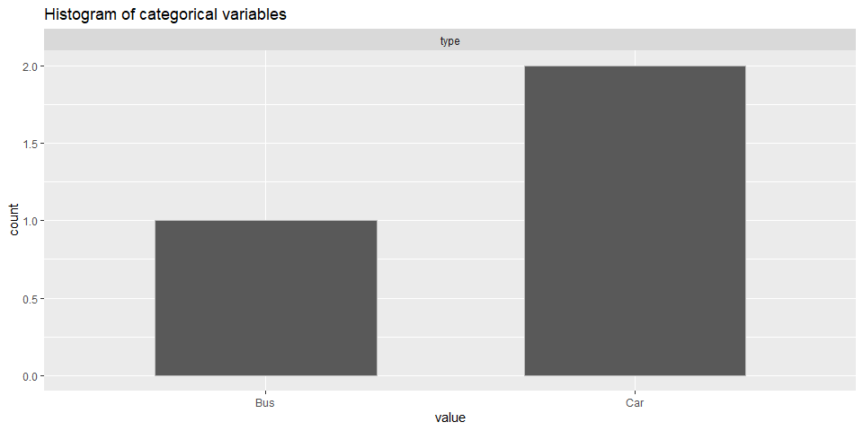
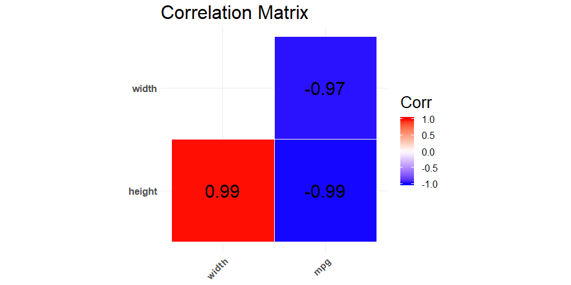

Summary
Exploratory Data analysis is an important step in any data analysis. There are some general steps like describing the data, knowing NA values and plotting the distributions of the variables which are performed to understand the data well. All these tasks require a lot of coding effort. The package tries to address this issue by providing a single function which will generate a general exploratory data analysis report. This report will contain the distribution plots of categorical and numerical variables, correlation matrix and a numerical and graphical representation to understand and identify NA values.
Package positioning
The package helps in the EDA process of data analysis. There are other similar package which can be used for EDA analysis. A package which does a similar thing is DataExplorer. The package scans and analyzes each variable, and visualizes them with typical graphical techniques.
Functions
-
calc_cor: This function will take in dataframe and will return correlation matrix of the features -
describe_na_values: This function will take in dataframe and will give a table listing number of NA values in each feature. -
describe_cat_var: This function will take data frame and categorical variable names and will return the histogram of each categorical variable -
describe_num_var: This function will take data frame and numerical variable names and will return the histogram of each numerical variable. -
generate_report: This is a wrapper function which generates an EDA report by plotting graphs and tables for the numeric variables, categorical variables, NA values and correlation in a dataframe
Installation
You can download, build and install this package from GitHub with:
Dependencies
- R version 3.6.2 and R packages:
- rlang==0.4.2
- dplyr==0.8.3
- tibble==2.1.3
- purrr==0.3.3
- ggplot2==3.2.1
- tidyr==1.0.0
- ggcorrplot==0.1.3
- testthat==2.1.0
Example
This is a basic example which shows you how to solve a common problem:
library(edar)
X <- dplyr::tibble(type = c('Car', 'Bus', 'Car'), height = c(10, 20, 15), width = c(10, 15, 13))
# Evaluates a dataframe for NA values
describe_na_values(X)
#> $type
#> [1] 1 1 1
#>
#> $height
#> [1] 1 1 1
#>
#> $width
#> [1] 1 1 1
# Show the EDA for the numeric variables
num_result <- describe_num_var(X, c('height', 'width'))
num_result$summary
#> # A tibble: 7 x 3
#> summary height width
#> <chr> <chr> <chr>
#> 1 25% 12.5 11.5
#> 2 75% 17.5 14
#> 3 min 10 10
#> 4 max 20 15
#> 5 median 15 13
#> 6 mean 15 12.667
#> 7 sd 5 2.517
num_result$plotoptions(tidyverse.quiet = TRUE, repr.plot.width = 10, repr.plot.height = 10)

